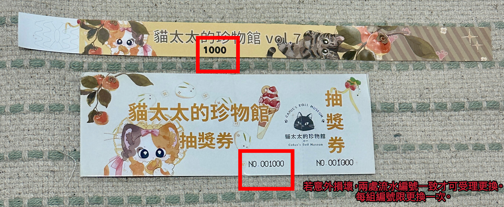

遊客須知
Vol.7 2026.9.25 · 朝馬國民運動中心
【本場調整】
本場場地為專業體育空間，全場禁止飲食（僅可飲用白開水），詳見下方「本場配合事項」。
本場場地為專業體育空間，全場禁止飲食（僅可飲用白開水），詳見下方「本場配合事項」。
購票資訊
活動門票分為現場購票、線上購票 二種形式。
- 線上先行＆早鳥票販售時間：預計8月下旬公開
- 現場開放購票時間：活動當天早上 11:00 開始販售至下午 3:30
- 開放線上票（先行＆早鳥）兌換實體票券時間：活動當天早上 9:30 開始
活動流程
| 時間 | 事項 |
|---|---|
| 09:00 | 社團入場開始 |
| 09:30 | 開放線上票兌換成實體票 |
| 10:20 | 先行票整隊準備入場 ＊需先兌換成實體票＊ |
| 10:40 | 先行票入場（社團入場截止） ＊僅可至攤位前排隊、不可交易＊ |
| 11:00 | 活動正式開始 · 開放現場購票＆早鳥／現場票入場 |
| 13:30 | 抽獎活動（一） |
| 15:00 | 抽獎活動（二） |
| 16:00 | 活動結束 |
| 16:30 | 攤主撤場完畢 |

▲ 活動流程一覽

▲ 其它注意事項
先行入場流程
- 9:30 開放線上先行票兌換成實體票 + 領取先行號碼牌
- 10:20 工作人員開始先行票整隊，準備入場
- 10:40 先行票開始入場
- 10:40~11:00 持先行號碼牌至品牌攤位前排隊
先行號碼牌介紹
推薦給需要購買限量熱門商品的民眾
- 先行票可早 20 分鐘入場，含先行號碼牌（用於在攤位前的排隊購物順序）。
- 活動當天由工作人員隨機抽出，並與票券和抽獎券一同交給前來兌票的民眾。
- 先行號碼牌的數量以賣出的先行票總數為基準。例如，如果賣出了 200 張票，先行號碼牌的號碼範圍為 1 至 200，共 200 張號碼牌。
- 先行號碼牌為在攤位前排隊購物順序。例如，如果一位民眾持有 10 號先行號碼牌，另一位持有 19 號，那第 19 號的民眾需排在 10 號之後。
- 每張先行號碼牌，使用一次即作廢。請於交易完成時交給攤主。請勿持同張先行號碼牌重複排隊。
- 活動正式開始，先行號碼牌將自動作廢。
- 先行入場券不可轉賣、讓渡與交換。
⚠ 先行票交易限制規範
活動正式開始前，禁止一切商品交易相關行為。
包含但不限於：
- 商品挑選
- 商品預留／保留
- 發放購物順序號碼牌
- 詢問價格後確認購買
- 訂金支付／全額付款／結帳
- 任何形式的交易承諾
設立此規範之原因：
先行票入場者於活動正式開始前，仍可依照主辦單位規定自由調整自身排隊順序。在先行入場隊伍順序尚未正式確認前，每位持票者的實際入場順序可能變動，攤位購買優先權尚未成立，商品交易結果可能因隊伍調整產生爭議。
若提前進行交易，可能造成買家已付款但後續隊伍順序改變、攤商與買家對交易成立時間產生爭議、工作人員無法判定交易責任與優先權等問題。
所有交易行為須待先行入場隊伍順序確認完成，並由主辦單位宣布活動正式開始後，方可進行。


抽獎方式
- 抽獎券開放投入時間：11:00 ~ 13:50 止
- 抽獎時間：14:00（一）15:00（二）
本場配合事項
本次台中場地為專業體育空間，為了維護場地品質與大家的活動體驗，還請協助配合以下事項：
- 全場禁止飲食，僅可飲用白開水。
- 請勿穿著跟鞋（如高跟鞋、硬底皮鞋等），建議以球鞋等軟底鞋款為主。
- 為保養場地地面，使用推車或行李箱時請輕放移動；若遇卡住情況，請以搬運方式處理，避免強行拖曳造成地板刮傷。
感謝大家的體諒與配合，一起珍惜這次難得的場地空間 (>^ω^<)
入場規範（通用）
- 未滿 2 歲之幼兒：請使用嬰兒推車，不要讓寶寶自行行走，避免跌倒推擠造成危險。
- 2 歲以上、6 歲以下的兒童禁止入場。
- 6 歲及以上需購票入場，並由監護人負責照顧。
- 在進行入場排隊時，嚴格遵守每人對應一個位置的規定，不得以任何物品佔據位置，亦不得委託他人替代排隊。
- 本次活動採手環入場，入場手環相關使用規則請見下方「入場手環暨抽獎券使用規則」。
入場手環暨抽獎券使用規則
本次活動全面改採手環入場，不再使用手章。入場手環與抽獎券印有相同流水編號，請妥善保管，並遵守以下規則：

▲ 手環流水編號示意圖
- 手環為唯一入場憑證
本次活動採手環入場，憑手環可於活動期間內重複進出場。手環與抽獎券印有相同流水編號，兩者為一組配對憑證。 - 手環拆除即視為作廢
手環經拆除、剪斷或撕毀後即失去效力，不得再持該手環入場或重複進出。 - 手環損毀之更換辦理
如手環於活動期間內損毀，須同時攜帶已損毀之手環殘件及對應流水編號之抽獎券票根至服務台辦理更換，兩者編號須一致方可受理。 - 更換後原資格一併作廢
辦理更換時，原手環及原抽獎券票根將當場作廢並收回，並發放全新編號之手環與抽獎券。原抽獎券所對應之抽獎資格自更換當下起同步作廢，即便原編號日後經抽出，亦不予兌獎，並依從缺處理。 - 每組編號限更換一次
每組手環／抽獎券編號僅受理一次更換申請，恕不接受重複申請。如有異常情形，將由現場人員另行複核處理。 - 無法配對恕不受理
若無法同時提供損毀手環與對應編號抽獎券票根，或編號不一致，恕無法辦理更換及入場。 - 手環禁止轉讓、轉售
手環僅供本人使用，不得轉讓、轉售或轉借他人使用。經發現有轉讓、轉售情形，主辦單位有權取消其入場資格及抽獎資格，不另行通知。
禁止事項（通用）
- 禁止 cosplay（角色扮演）或攜帶道具入場。
- 全場禁止飲食，僅可飲用白開水。請保持場地乾淨，不要亂丟垃圾。
- 全面禁止吸菸、飲酒、吃檳榔。
- 嚴禁攜帶火源和危險物品。
- 除導盲犬以外，禁止攜帶任何動物進入會場。
- 嚴禁在會場內奔跑，以確保參與者的安全。
拍攝禮儀（通用）
- 在進行拍攝前，請先詢問攤主或被拍攝者的意願，以尊重他們的隱私和意願。
免責聲明
- 主辦單位不介入交易行為，但將協助維護會場內的購物品質。如果出現嚴重情況，將請求警方介入處理。
- 主辦單位保留活動取消或改期的決定權利。當遇到天災、人禍等不可抗力因素導致活動難以進行時，活動改期或取消的相關訊息，將在 7 日內在社群媒體和官方網站上進行公告，並提供後續處理方案。
- 如有未盡說明的事項，主辦保留說明和補充規則的權利。